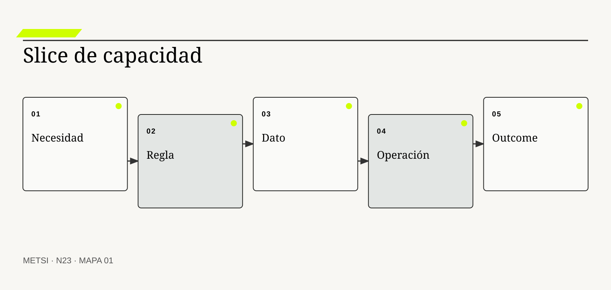
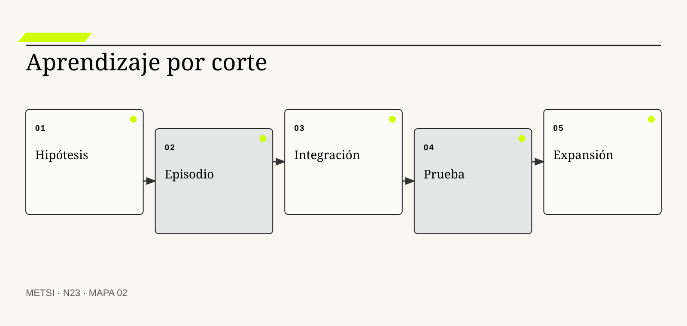
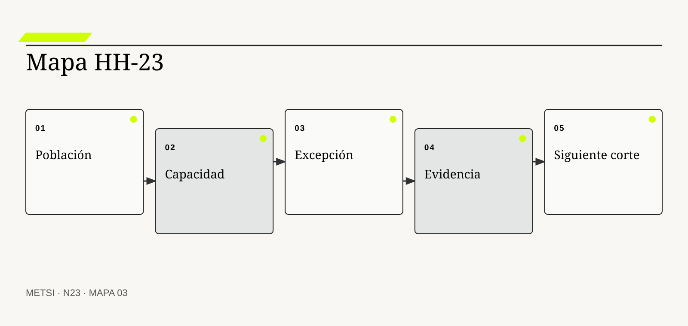

TG
Tom Gilb
Desarrolló entrega evolutiva y medición de valor.

N23 corta entregas por capacidad y aprendizaje, conecta slices verticales con outcomes y hace explícitos integración, población, riesgo y condición…
Capacidad y aprendizaje: cortar entregas por outcome
Ruta de lectura: problema, distinciones, decisiones, prueba, transferencia y preparación.
Nota. SIN NUM. identifica aparatos de orientación y referencia.
Seis voces para ampliar, contrastar y discutir N23.
Desarrolló entrega evolutiva y medición de valor.

Popularizó story mapping y cortes orientados al recorrido.
Aplicaron principios lean al desarrollo de software.

Vinculó entrega continua, riesgo e integración temprana.

Aportó evidencia sobre desempeño de entrega y organización.
Formuló el walking skeleton como estrategia de integración.
N23 no resume estas fuentes ni las convierte en receta. Las pone en tensión para construir juicio profesional.
¿Cómo dividir una iniciativa sin producir partes técnicas que sólo adquieren sentido cuando todo está terminado?

N23 corta entregas por capacidad y aprendizaje, conecta slices verticales con outcomes y hace explícitos integración, población, riesgo y condición de expansión.
Hotel Horizonte divide la mejora del ingreso en interfaz, API, reglas, analítica y capacitación. Cada equipo entrega su componente según plan. La demostración mensual muestra avances y el tablero acumula porcentaje completado.
Cuando se intenta operar un caso real, ningún corte permite alojar a una persona de punta a punta. La interfaz consulta un estado viejo, la regla no contempla accesibilidad, la analítica no recibe excepciones y la capacitación describe una versión que todavía no existe. Hay outputs, pero no capacidad utilizable ni aprendizaje sobre el outcome.
Cortar por capacidad significa construir una fracción del sistema que permite a actores concretos lograr algo valioso bajo condiciones reales. Cortar por aprendizaje significa elegir la porción mínima que distingue una incertidumbre relevante. Ambos criterios atraviesan componentes y obligan a integrar temprano.
El equipo selecciona un episodio: llegada anticipada con habitación accesible. Une información, regla, decisión, comunicación y reparación en una versión limitada a un turno. No cubre todo el mercado, pero funciona de punta a punta y prueba el supuesto más riesgoso.
El corte deja de ser una técnica de backlog. Se convierte en una decisión sobre valor, riesgo, integración y quién queda fuera de la primera versión.
N23 recibe hipótesis de HH-22 y las transforma en incrementos que producen evidencia y capacidad, sin esconder integración ni postergar el servicio real.
HH-23 organiza slices verticales por episodios: ingreso ordinario, llegada anticipada, accesibilidad y sobreventa. Cada uno reúne personas, reglas, datos, tecnología, comunicación y reparación. El primer corte no es el más fácil técnicamente, sino el que prueba una hipótesis crítica con exposición limitada.
N23 corta entregas por capacidad y aprendizaje, conecta slices verticales con outcomes y hace explícitos integración, población, riesgo y condición de expansión.
N22 deja evidencia y decisiones abiertas que N23 utiliza sin reabrir su contenido. N23 corta entregas por capacidad y aprendizaje, conecta slices verticales con outcomes y hace explícitos integración, población, riesgo y condición de expansión.
N24 recibirá un conjunto de capacidades posibles y decidirá cuáles no hacer, postergar o proteger. N23 no resuelve todavía la priorización entre apuestas.
Gilb, T. organiza entrega evolutiva y medición de valor. En N23, ese aporte pone a prueba decisiones concretas y no funciona como respaldo ornamental. Su alcance se conserva en N23: ninguna referencia sustituye la evidencia del caso ni la autoridad necesaria para intervenir.
Patton, J. conecta cortes de entrega con recorridos y capacidades. En N23, ese aporte pone a prueba decisiones concretas y no funciona como respaldo ornamental. Su alcance se conserva en N23: ninguna referencia sustituye la evidencia del caso ni la autoridad necesaria para intervenir.
Poppendieck, M. y Poppendieck, T. traslada flujo, aprendizaje y reducción de desperdicio al software. En N23, ese aporte pone a prueba decisiones concretas y no funciona como respaldo ornamental. Su alcance se conserva en N23: ninguna referencia sustituye la evidencia del caso ni la autoridad necesaria para intervenir.
Humble, J. y Farley, D. vinculan integración, lotes pequeños y reducción de riesgo. En N23, ese aporte pone a prueba decisiones concretas y no funciona como respaldo ornamental. Su alcance se conserva en N23: ninguna referencia sustituye la evidencia del caso ni la autoridad necesaria para intervenir.
Forsgren, N., Humble, J. y Kim, G. aportan evidencia sobre capacidades de entrega y desempeño. En N23, ese aporte pone a prueba decisiones concretas y no funciona como respaldo ornamental. Su alcance se conserva en N23: ninguna referencia sustituye la evidencia del caso ni la autoridad necesaria para intervenir.
Cockburn, A. aporta la noción de walking skeleton para integración temprana. En N23, ese aporte pone a prueba decisiones concretas y no funciona como respaldo ornamental. Su alcance se conserva en N23: ninguna referencia sustituye la evidencia del caso ni la autoridad necesaria para intervenir.
Ries, E. vincula hipótesis, exposición y aprendizaje decisional. En N23, ese aporte pone a prueba decisiones concretas y no funciona como respaldo ornamental. Su alcance se conserva en N23: ninguna referencia sustituye la evidencia del caso ni la autoridad necesaria para intervenir.
Project Management Institute provee principios y dominios que deben adaptarse al contexto y al valor. En N23, ese aporte pone a prueba decisiones concretas y no funciona como respaldo ornamental. Su alcance se conserva en N23: ninguna referencia sustituye la evidencia del caso ni la autoridad necesaria para intervenir.
Google Cloud aporta evidencia sobre capacidades de entrega y desempeño. En N23, ese aporte pone a prueba decisiones concretas y no funciona como respaldo ornamental. Su alcance se conserva en N23: ninguna referencia sustituye la evidencia del caso ni la autoridad necesaria para intervenir.
Google Cloud aporta una fuente contrastable para definir alcance, evidencia y condiciones de revisión. En N23, ese aporte pone a prueba decisiones concretas y no funciona como respaldo ornamental. Su alcance se conserva en N23: ninguna referencia sustituye la evidencia del caso ni la autoridad necesaria para intervenir.
NIST aporta prácticas de desarrollo seguro integradas al ciclo de vida. En N23, ese aporte pone a prueba decisiones concretas y no funciona como respaldo ornamental. Su alcance se conserva en N23: ninguna referencia sustituye la evidencia del caso ni la autoridad necesaria para intervenir.
W3C establece criterios verificables de accesibilidad digital. En N23, ese aporte pone a prueba decisiones concretas y no funciona como respaldo ornamental. Su alcance se conserva en N23: ninguna referencia sustituye la evidencia del caso ni la autoridad necesaria para intervenir.

Una capacidad es la posibilidad sostenida de lograr un resultado bajo condiciones definidas. La definición fija el objeto de decisión. Si el equipo de N23 no puede expresar qué compromiso organiza, la categoría funciona como etiqueta y no como instrumento.
No es componente, competencia individual, feature ni proceso aislado. La distinción evita que una palabra familiar oculte otro mecanismo. En N23, confundirlos cambia qué se observa, qué se acepta como avance y quién debe intervenir.
En capacidad, el recorrido causal debe mostrar qué condición habilita la acción, qué transformación ocurre y quién absorbe el resultado. Integra personas, reglas, información, tecnología y autoridad en uso. Si un salto depende sólo de una explicación oral, la estrategia todavía no puede gobernarlo.
La evidencia relevante para capacidad no se limita al resultado promedio. Se prueba con un episodio completo, una excepción y una reparación. N23 busca además casos negativos, diferencias entre poblaciones y señales de que la explicación elegida podría ser insuficiente.
Ejemplo. Recepción asigna, comunica y corrige una llegada anticipada. En N23, el episodio vuelve visible la relación entre ritmo, autoridad, evidencia y capacidad de reparación.
El tradeoff central de capacidad aparece entre anticipar y preservar opciones. Anticipar puede reducir coordinación y también fijar una premisa prematura; preservar opciones puede producir aprendizaje y también demorar una protección necesaria. La elección debe declarar cuál de esos costos acepta, durante cuánto tiempo y para quién.
La auditoría de capacidad termina con una pregunta de uso: ¿qué podría decidir ahora una persona que antes no podía? En N23, la respuesta debe nombrar una acción, una restricción y una evidencia, no sólo una comprensión mejorada.
Operacionalizar capacidad requiere asignar una unidad observable. El equipo define qué episodio contará, desde qué momento, con qué población y bajo qué fuente. Después compara al menos un caso ordinario con otro que fuerce excepción. Esta precisión en N23 evita que una conclusión general se sostenga sólo en ejemplos convenientes.
La decisión profesional no termina en adoptar capacidad. Se compara una ruta principal con una explicación rival, se explicita quién queda expuesto y se conserva un modo de revisar. Puede existir localmente y fallar al cambiar turno, volumen o población. El límite forma parte del diseño y no una nota posterior.
Un slice vertical es un corte mínimo que atraviesa las capas necesarias para producir capacidad observable. Conviene comenzar por su función profesional. Si el equipo de N23 no puede expresar qué compromiso organiza, la categoría funciona como etiqueta y no como instrumento.
No es una tarea técnica pequeña ni una épica dividida por arquitectura. El contraste importa porque conduce a pruebas distintas. En N23, confundirlos cambia qué se observa, qué se acepta como avance y quién debe intervenir.
El mecanismo de slice vertical no se presume por el nombre. Fuerza integración temprana y reduce el tiempo hasta la evidencia. Debe localizarse dónde comienza, qué relaciones activa, qué demora introduce y qué capacidad de reparación queda disponible cuando la expectativa no se cumple.
Una afirmación sobre slice vertical gana fuerza cuando puede reconstruirse desde fuentes independientes. Se valida mediante uso de punta a punta y dependencias reales. La ausencia de señal también se interpreta: puede significar estabilidad, mala observación o exclusión del caso que más importa.
Ejemplo. Una regla simple con datos, interfaz, operación y fallback supera a cinco módulos incompletos. En N23, el episodio vuelve visible la relación entre ritmo, autoridad, evidencia y capacidad de reparación.
La escala modifica slice vertical. Una solución válida para un equipo puede fallar cuando atraviesa sedes, turnos o proveedores porque aumenta la distancia entre señal y autoridad. Antes de ampliar, N23 prueba si la misma decisión conserva significado y reparación bajo esa nueva distribución.
Para evitar consenso aparente, slice vertical se revisa con alguien afectado y con alguien responsable de reparar. Las dos perspectivas pueden valorar resultados diferentes y obligan a declarar la prioridad elegida.
En la práctica, slice vertical atraviesa más de un área. Se identifican handoffs, esperas, decisiones y datos que cada participante puede ver. Cuando dos áreas usan evidencia distinta en N23, el expediente conserva la divergencia hasta determinar si representa error, perspectiva legítima o una brecha que la estrategia debe resolver.
En una revisión, slice vertical debe responder tres preguntas: qué mejora, qué desplaza y qué vuelve más difícil de revertir. Un slice puede ser demasiado estrecho si evita la incertidumbre central. Si esas respuestas cambian, también debe cambiar el compromiso, aunque el trabajo previo haya sido técnicamente correcto.
Un corte por aprendizaje maximiza información útil para una decisión con exposición limitada. El concepto adquiere valor cuando cambia una decisión. Si el equipo de N23 no puede expresar qué compromiso organiza, la categoría funciona como etiqueta y no como instrumento.
No busca producir una demo ni seleccionar lo más rápido. Su vecino conceptual puede parecer equivalente y no lo es. En N23, confundirlos cambia qué se observa, qué se acepta como avance y quién debe intervenir.
Comprender corte por aprendizaje exige seguir la decisión en el tiempo. Elige una prueba discriminante sobre el supuesto de mayor riesgo o valor. El análisis distingue condición, intervención, señal temprana y consecuencia para evitar atribuir a una práctica un efecto producido por otro cambio simultáneo.
La prueba de corte por aprendizaje debe formularse antes de conocer el resultado. Se mide por hipótesis actualizada y decisión habilitada. Se registra qué observación sostendría continuar, cuál obligaría a adaptar y cuál activaría detención o escalamiento.
Ejemplo. Probar accesibilidad revela semántica y autoridad antes de ampliar. En N23, el episodio vuelve visible la relación entre ritmo, autoridad, evidencia y capacidad de reparación.
El tiempo también altera corte por aprendizaje. Una evidencia suficiente para explorar puede ser insuficiente para operar de forma permanente. Por eso se separan prueba local, compromiso transitorio y condición estable, y cada estado conserva fecha, alcance y responsable de revisión.
El registro de corte por aprendizaje conserva una explicación rival. Si esa alternativa predice mejor el episodio siguiente, el equipo cambia de curso sin reescribir retrospectivamente lo que creía saber.
La gobernanza de corte por aprendizaje incluye quién puede proponer, aprobar, ejecutar, observar y reparar. Esas funciones no se presumen por cargo ni por permiso técnico. N23 las prueba en un escenario donde falta la persona habitual, porque una capacidad que sólo funciona con conocimiento privado todavía no pertenece a la organización.
El juicio sobre corte por aprendizaje incluye distribución de consecuencias. Aprender sin capacidad de actuar puede postergar valor y agotar confianza. Una mejora agregada no alcanza si concentra espera, riesgo o trabajo invisible en un grupo sin autoridad para discutir la decisión.
Un corte por outcome reúne lo necesario para cambiar una condición relevante en una población definida. La definición fija el objeto de decisión. Si el equipo de N23 no puede expresar qué compromiso organiza, la categoría funciona como etiqueta y no como instrumento.
No significa resolver todo el journey ni prometer impacto final con un piloto. La distinción evita que una palabra familiar oculte otro mecanismo. En N23, confundirlos cambia qué se observa, qué se acepta como avance y quién debe intervenir.
La explicación operacional de corte por outcome conecta personas, reglas y tecnología. Conecta capacidad, uso y consecuencia sin esperar el conjunto completo. Esa conexión permite decidir qué parte puede modificarse localmente y cuál requiere coordinación con otras autoridades o capacidades.
Para auditar corte por outcome, conviene combinar evidencia de diseño, ejecución y consecuencia. Baseline, población y resultado permiten observar contribución. Ninguna fuente domina automáticamente; una especificación correcta puede convivir con una operación dañina.
Ejemplo. Un turno reduce espera y conserva protección, aunque otros canales sigan fuera. En N23, el episodio vuelve visible la relación entre ritmo, autoridad, evidencia y capacidad de reparación.
Existe además una dimensión política en corte por outcome. La opción más eficiente puede reducir la capacidad de una persona para cuestionar una decisión o trasladar trabajo sin reconocerlo. N23 registra esa distribución y no la esconde dentro de un indicador agregado.
Una prueba adversa de corte por outcome introduce demora, ausencia de autoridad o dato incompleto. El objetivo de N23 no es cubrir todas las fallas, sino revelar si la estrategia mantiene una salida segura fuera del camino ordinario.
El indicador de corte por outcome se elige después de formular la decisión. Puede combinar tiempo, calidad, distribución y costo de reparación. Una cifra aislada rara vez explica el mecanismo. En N23, la lectura conjunta de señales evita optimizar velocidad mientras aumenta retrabajo, exclusión o dependencia.
La condición de cierre de corte por outcome no es perfección. El outcome parcial no debe presentarse como resultado universal. Es evidencia suficiente para el uso previsto, riesgo residual aceptado por autoridad y una ruta clara cuando el supuesto deje de cumplirse.

Integración temprana confronta contratos, datos y prácticas antes de que el costo de cambio se acumule. Conviene comenzar por su función profesional. Si el equipo de N23 no puede expresar qué compromiso organiza, la categoría funciona como etiqueta y no como instrumento.
No es desplegar constantemente ni fusionar código sin criterio. El contraste importa porque conduce a pruebas distintas. En N23, confundirlos cambia qué se observa, qué se acepta como avance y quién debe intervenir.
Para que integración temprana sea algo más que una etiqueta, debe existir una cadena examinable. Expone incompatibilidades semánticas, temporales y operativas dentro de cada corte. La cadena incluye supuestos, handoffs y efectos laterales que una descripción ideal suele omitir.
El equipo no declara resuelto integración temprana por acuerdo retórico. Pruebas end-to-end, observabilidad y operación conjunta sostienen la evidencia. Una persona ajena al diseño debe poder repetir la prueba y comprender por qué el resultado habilita una decisión concreta.
Ejemplo. La definición de liberada falla en el primer slice y no al final. En N23, el episodio vuelve visible la relación entre ritmo, autoridad, evidencia y capacidad de reparación.
La mantenibilidad de integración temprana se prueba mediante cambio deliberado. Se modifica una regla, una fuente o una dependencia y se observa quién detecta el impacto, cuánto tarda en responder y qué información necesita. En N23, si la respuesta depende de memoria privada, la capacidad todavía es frágil.
El costo de integración temprana se observa tanto en presupuesto como en atención, espera, coordinación y dependencia. Lo que no figura en una factura puede seguir siendo el costo que define la viabilidad.
La transición asociada con integración temprana necesita un estado intermedio explícito. Durante ese período conviven reglas, versiones o capacidades diferentes. N23 declara cuál rige para cada población, cómo se comunica y qué contingencia protege a quien podría quedar entre ambos sistemas.
El análisis de integración temprana evita dos extremos: conservar por inercia y cambiar por identidad metodológica. Integrar sin protección puede llevar inestabilidad a producción. Entre ambos queda una decisión provisional con fecha, responsable y prueba de revisión.
Un walking skeleton es una trayectoria mínima ejecutable que conecta las partes esenciales del sistema. El concepto adquiere valor cuando cambia una decisión. Si el equipo de N23 no puede expresar qué compromiso organiza, la categoría funciona como etiqueta y no como instrumento.
No es arquitectura definitiva ni producto mínimo valioso por sí mismo. Su vecino conceptual puede parecer equivalente y no lo es. En N23, confundirlos cambia qué se observa, qué se acepta como avance y quién debe intervenir.
El valor de walking skeleton aparece al contrastar alternativas. Permite validar flujo técnico y operacional antes de enriquecer comportamiento. Si dos opciones producen el mismo entregable inmediato, el mecanismo permite compararlas por aprendizaje, dependencia, riesgo residual y posibilidad de salida.
La suficiencia de evidencia para walking skeleton depende del costo de equivocarse. Se prueba con trazabilidad completa, recuperación y una decisión real. A mayor irreversibilidad o desigualdad de daño, mayor contraste, supervisión y autoridad se requieren.
Ejemplo. Un caso de ingreso atraviesa canal, PMS, cerradura y confirmación. En N23, el episodio vuelve visible la relación entre ritmo, autoridad, evidencia y capacidad de reparación.
Finalmente, walking skeleton debe convivir con otras decisiones. Optimizarla de manera aislada puede empeorar flujo, seguridad o comprensión. El expediente N23 explicita dependencias y evita que una mejora local se presente como outcome completo del sistema.
La revisión de walking skeleton fija fecha y desencadenante. Puede ocurrir por incidente, cambio normativo, nueva población o evidencia acumulada. Sin esa regla en N23, una decisión provisional se vuelve permanente por olvido.
El cierre de walking skeleton debe sobrevivir a una revisión independiente. La evidencia, las decisiones y los límites se almacenan de manera que otra persona pueda cuestionarlos. En N23, la trazabilidad no busca eliminar desacuerdo; busca que el desacuerdo se concentre en supuestos examinables y no en recuerdos incompatibles.
La estrategia debe poder explicar por qué walking skeleton recibe cierta inversión y no otra. Puede crear falsa confianza si sólo recorre el camino feliz. Esa explicación conecta valor, costo, aprendizaje y reparación, y permanece abierta a evidencia nueva.
Un producto mínimo viable es un dispositivo para probar una hipótesis de valor y uso con el menor compromiso defendible. La definición fija el objeto de decisión. Si el equipo de N23 no puede expresar qué compromiso organiza, la categoría funciona como etiqueta y no como instrumento.
No es una versión pobre, incompleta o de baja calidad. La distinción evita que una palabra familiar oculte otro mecanismo. En N23, confundirlos cambia qué se observa, qué se acepta como avance y quién debe intervenir.
En producto mínimo viable, el recorrido causal debe mostrar qué condición habilita la acción, qué transformación ocurre y quién absorbe el resultado. Combina propuesta, población y medición para aprender antes de escalar. Si un salto depende sólo de una explicación oral, la estrategia todavía no puede gobernarlo.
La evidencia relevante para producto mínimo viable no se limita al resultado promedio. Debe producir evidencia sobre conducta y outcome, no sólo aceptación verbal. N23 busca además casos negativos, diferencias entre poblaciones y señales de que la explicación elegida podría ser insuficiente.
Ejemplo. Una modalidad manual asistida prueba coordinación antes de automatizar. En N23, el episodio vuelve visible la relación entre ritmo, autoridad, evidencia y capacidad de reparación.
El tradeoff central de producto mínimo viable aparece entre anticipar y preservar opciones. Anticipar puede reducir coordinación y también fijar una premisa prematura; preservar opciones puede producir aprendizaje y también demorar una protección necesaria. La elección debe declarar cuál de esos costos acepta, durante cuánto tiempo y para quién.
La auditoría de producto mínimo viable termina con una pregunta de uso: ¿qué podría decidir ahora una persona que antes no podía? En N23, la respuesta debe nombrar una acción, una restricción y una evidencia, no sólo una comprensión mejorada.
Operacionalizar producto mínimo viable requiere asignar una unidad observable. El equipo define qué episodio contará, desde qué momento, con qué población y bajo qué fuente. Después compara al menos un caso ordinario con otro que fuerce excepción. Esta precisión en N23 evita que una conclusión general se sostenga sólo en ejemplos convenientes.
La decisión profesional no termina en adoptar producto mínimo viable. Se compara una ruta principal con una explicación rival, se explicita quién queda expuesto y se conserva un modo de revisar. En contextos críticos, mínimo no puede significar sin seguridad o accesibilidad. El límite forma parte del diseño y no una nota posterior.
Una feature flag separa despliegue técnico de disponibilidad para poblaciones concretas. Conviene comenzar por su función profesional. Si el equipo de N23 no puede expresar qué compromiso organiza, la categoría funciona como etiqueta y no como instrumento.
No reemplaza diseño experimental, autorización ni rollback operacional. El contraste importa porque conduce a pruebas distintas. En N23, confundirlos cambia qué se observa, qué se acepta como avance y quién debe intervenir.
El mecanismo de feature flag y exposición no se presume por el nombre. Permite graduar exposición, comparar y retirar sin nueva instalación. Debe localizarse dónde comienza, qué relaciones activa, qué demora introduce y qué capacidad de reparación queda disponible cuando la expectativa no se cumple.
Una afirmación sobre feature flag y exposición gana fuerza cuando puede reconstruirse desde fuentes independientes. Se audita con configuración, ownership, deuda y efectos entre versiones. La ausencia de señal también se interpreta: puede significar estabilidad, mala observación o exclusión del caso que más importa.
Ejemplo. La regla se habilita sólo en un turno con soporte disponible. En N23, el episodio vuelve visible la relación entre ritmo, autoridad, evidencia y capacidad de reparación.
La escala modifica feature flag y exposición. Una solución válida para un equipo puede fallar cuando atraviesa sedes, turnos o proveedores porque aumenta la distancia entre señal y autoridad. Antes de ampliar, N23 prueba si la misma decisión conserva significado y reparación bajo esa nueva distribución.
Para evitar consenso aparente, feature flag y exposición se revisa con alguien afectado y con alguien responsable de reparar. Las dos perspectivas pueden valorar resultados diferentes y obligan a declarar la prioridad elegida.
En la práctica, feature flag y exposición atraviesa más de un área. Se identifican handoffs, esperas, decisiones y datos que cada participante puede ver. Cuando dos áreas usan evidencia distinta en N23, el expediente conserva la divergencia hasta determinar si representa error, perspectiva legítima o una brecha que la estrategia debe resolver.
En una revisión, feature flag y exposición debe responder tres preguntas: qué mejora, qué desplaza y qué vuelve más difícil de revertir. Flags permanentes multiplican estados y complejidad. Si esas respuestas cambian, también debe cambiar el compromiso, aunque el trabajo previo haya sido técnicamente correcto.

Terminado significa que el corte puede usarse, observarse, sostenerse y repararse en su alcance. El concepto adquiere valor cuando cambia una decisión. Si el equipo de N23 no puede expresar qué compromiso organiza, la categoría funciona como etiqueta y no como instrumento.
No equivale a código completo, revisión aprobada ni demo exitosa. Su vecino conceptual puede parecer equivalente y no lo es. En N23, confundirlos cambia qué se observa, qué se acepta como avance y quién debe intervenir.
Comprender definición de terminado orientada a capacidad exige seguir la decisión en el tiempo. Incluye operación, seguridad, accesibilidad, datos, soporte y aprendizaje. El análisis distingue condición, intervención, señal temprana y consecuencia para evitar atribuir a una práctica un efecto producido por otro cambio simultáneo.
La prueba de definición de terminado orientada a capacidad debe formularse antes de conocer el resultado. Escenarios ordinarios y adversos verifican el conjunto. Se registra qué observación sostendría continuar, cuál obligaría a adaptar y cuál activaría detención o escalamiento.
Ejemplo. El equipo de turno resuelve una excepción con evidencia trazable. En N23, el episodio vuelve visible la relación entre ritmo, autoridad, evidencia y capacidad de reparación.
El tiempo también altera definición de terminado orientada a capacidad. Una evidencia suficiente para explorar puede ser insuficiente para operar de forma permanente. Por eso se separan prueba local, compromiso transitorio y condición estable, y cada estado conserva fecha, alcance y responsable de revisión.
El registro de definición de terminado orientada a capacidad conserva una explicación rival. Si esa alternativa predice mejor el episodio siguiente, el equipo cambia de curso sin reescribir retrospectivamente lo que creía saber.
La gobernanza de definición de terminado orientada a capacidad incluye quién puede proponer, aprobar, ejecutar, observar y reparar. Esas funciones no se presumen por cargo ni por permiso técnico. N23 las prueba en un escenario donde falta la persona habitual, porque una capacidad que sólo funciona con conocimiento privado todavía no pertenece a la organización.
El juicio sobre definición de terminado orientada a capacidad incluye distribución de consecuencias. El criterio debe ser proporcional y no convertir toda prueba en lanzamiento total. Una mejora agregada no alcanza si concentra espera, riesgo o trabajo invisible en un grupo sin autoridad para discutir la decisión.
Deuda de integración es el trabajo y riesgo diferidos al separar componentes que deberán funcionar juntos. La definición fija el objeto de decisión. Si el equipo de N23 no puede expresar qué compromiso organiza, la categoría funciona como etiqueta y no como instrumento.
No es sólo deuda técnica ni defecto de interfaz. La distinción evita que una palabra familiar oculte otro mecanismo. En N23, confundirlos cambia qué se observa, qué se acepta como avance y quién debe intervenir.
La explicación operacional de deuda de integración conecta personas, reglas y tecnología. Crece con contratos implícitos, ambientes divergentes y validación tardía. Esa conexión permite decidir qué parte puede modificarse localmente y cuál requiere coordinación con otras autoridades o capacidades.
Para auditar deuda de integración, conviene combinar evidencia de diseño, ejecución y consecuencia. Se observa en retrabajo, tiempo de estabilización y fallas entre equipos. Ninguna fuente domina automáticamente; una especificación correcta puede convivir con una operación dañina.
Ejemplo. Cinco componentes verdes producen un journey rojo. En N23, el episodio vuelve visible la relación entre ritmo, autoridad, evidencia y capacidad de reparación.
Existe además una dimensión política en deuda de integración. La opción más eficiente puede reducir la capacidad de una persona para cuestionar una decisión o trasladar trabajo sin reconocerlo. N23 registra esa distribución y no la esconde dentro de un indicador agregado.
Una prueba adversa de deuda de integración introduce demora, ausencia de autoridad o dato incompleto. El objetivo de N23 no es cubrir todas las fallas, sino revelar si la estrategia mantiene una salida segura fuera del camino ordinario.
El indicador de deuda de integración se elige después de formular la decisión. Puede combinar tiempo, calidad, distribución y costo de reparación. Una cifra aislada rara vez explica el mecanismo. En N23, la lectura conjunta de señales evita optimizar velocidad mientras aumenta retrabajo, exclusión o dependencia.
La condición de cierre de deuda de integración no es perfección. Alguna separación es necesaria; debe registrarse y pagarse deliberadamente. Es evidencia suficiente para el uso previsto, riesgo residual aceptado por autoridad y una ruta clara cuando el supuesto deje de cumplirse.
La secuencia ordena cortes por aprendizaje, valor, dependencia y protección. Conviene comenzar por su función profesional. Si el equipo de N23 no puede expresar qué compromiso organiza, la categoría funciona como etiqueta y no como instrumento.
No es simplemente prioridad de backlog ni recorrido de menor esfuerzo. El contraste importa porque conduce a pruebas distintas. En N23, confundirlos cambia qué se observa, qué se acepta como avance y quién debe intervenir.
Para que secuencia de slices sea algo más que una etiqueta, debe existir una cadena examinable. Cada slice modifica lo que se sabe y habilita el siguiente compromiso. La cadena incluye supuestos, handoffs y efectos laterales que una descripción ideal suele omitir.
El equipo no declara resuelto secuencia de slices por acuerdo retórico. Se justifica con riesgo, outcome, capacidad disponible y costo de demora. Una persona ajena al diseño debe poder repetir la prueba y comprender por qué el resultado habilita una decisión concreta.
Ejemplo. Accesibilidad precede a volumen porque su daño es más difícil de reparar. En N23, el episodio vuelve visible la relación entre ritmo, autoridad, evidencia y capacidad de reparación.
La mantenibilidad de secuencia de slices se prueba mediante cambio deliberado. Se modifica una regla, una fuente o una dependencia y se observa quién detecta el impacto, cuánto tarda en responder y qué información necesita. En N23, si la respuesta depende de memoria privada, la capacidad todavía es frágil.
El costo de secuencia de slices se observa tanto en presupuesto como en atención, espera, coordinación y dependencia. Lo que no figura en una factura puede seguir siendo el costo que define la viabilidad.
La transición asociada con secuencia de slices necesita un estado intermedio explícito. Durante ese período conviven reglas, versiones o capacidades diferentes. N23 declara cuál rige para cada población, cómo se comunica y qué contingencia protege a quien podría quedar entre ambos sistemas.
El análisis de secuencia de slices evita dos extremos: conservar por inercia y cambiar por identidad metodológica. Una secuencia óptima local puede bloquear una plataforma compartida. Entre ambos queda una decisión provisional con fecha, responsable y prueba de revisión.
Expandir es aumentar población, volumen o compromiso después de demostrar capacidad en el alcance anterior. El concepto adquiere valor cuando cambia una decisión. Si el equipo de N23 no puede expresar qué compromiso organiza, la categoría funciona como etiqueta y no como instrumento.
No es copiar el piloto ni asumir proporcionalidad. Su vecino conceptual puede parecer equivalente y no lo es. En N23, confundirlos cambia qué se observa, qué se acepta como avance y quién debe intervenir.
El valor de expansión aparece al contrastar alternativas. Revalida operación, arquitectura, soporte y efectos distributivos en nueva escala. Si dos opciones producen el mismo entregable inmediato, el mecanismo permite compararlas por aprendizaje, dependencia, riesgo residual y posibilidad de salida.
La suficiencia de evidencia para expansión depende del costo de equivocarse. Señales de carga, variación, incidentes y autonomía muestran si el mecanismo resiste. A mayor irreversibilidad o desigualdad de daño, mayor contraste, supervisión y autoridad se requieren.
Ejemplo. El slice pasa de un turno a todos con contingencia reforzada. En N23, el episodio vuelve visible la relación entre ritmo, autoridad, evidencia y capacidad de reparación.
Finalmente, expansión debe convivir con otras decisiones. Optimizarla de manera aislada puede empeorar flujo, seguridad o comprensión. El expediente N23 explicita dependencias y evita que una mejora local se presente como outcome completo del sistema.
La revisión de expansión fija fecha y desencadenante. Puede ocurrir por incidente, cambio normativo, nueva población o evidencia acumulada. Sin esa regla en N23, una decisión provisional se vuelve permanente por olvido.
El cierre de expansión debe sobrevivir a una revisión independiente. La evidencia, las decisiones y los límites se almacenan de manera que otra persona pueda cuestionarlos. En N23, la trazabilidad no busca eliminar desacuerdo; busca que el desacuerdo se concentre en supuestos examinables y no en recuerdos incompatibles.
La estrategia debe poder explicar por qué expansión recibe cierta inversión y no otra. Lo que funciona en baja escala puede cambiar incentivos y colas. Esa explicación conecta valor, costo, aprendizaje y reparación, y permanece abierta a evidencia nueva.
El instrumento organiza una decisión concreta y no una descripción total. Cada campo debe completarse con evidencia disponible, incertidumbre explícita y autoridad identificada. Si un campo todavía no puede responderse, se registra como asunto abierto y no se completa por inferencia.
El expediente se prueba con un escenario ordinario y uno adverso. Una persona que no participó en su construcción debe poder reconstruir qué se decidió, por qué, qué permanece incierto y cuál es la próxima puerta. El cierre no exige certeza total; exige incertidumbre gobernada y una salida practicable.
Un comercio no divide por front end, pagos y logística. El primer slice permite solicitar, autorizar, devolver y recibir reintegro para un tipo de compra.
La capacidad limitada revela excepciones, tiempos y responsabilidad antes de ampliar productos y canales.
HH-23 muestra que reducir alcance no exige romper el outcome en piezas sin uso.
Un equipo llama vertical a un corte que atraviesa capas de código pero omite soporte, política y reparación.
La demo funciona y el caso real vuelve al procedimiento manual sin registro.
La verticalidad se prueba en la capacidad sociotécnica, no en la arquitectura de software.
La prueba integral de capacidad y aprendizaje: cortar entregas por outcome toma una decisión real y la recorre desde su origen hasta una consecuencia observable. Utiliza outcome, población, hipótesis, capacidad mínima para evitar que el análisis quede dividido en artefactos independientes. Cada afirmación debe encontrar una fuente, una autoridad y una condición de revisión. Cuando dos registros no coinciden, la diferencia se conserva como hallazgo hasta explicar su mecanismo.
El escenario ordinario verifica que n23 corta entregas por capacidad y aprendizaje, conecta slices verticales con outcomes y hace explícitos integración, población, riesgo y condición de expansión. El escenario adverso modifica una dependencia, introduce demora y deja ausente a la persona que suele resolver. El equipo observa si la estrategia detecta el cambio, limita el daño, comunica incertidumbre y activa reparación sin recurrir a conocimiento privado.
La comparación incluye una alternativa descartada. Se documenta por qué no fue elegida, qué supuesto la volvería preferible y qué costo tendría recuperarla. Este ejercicio protege opciones futuras y evita presentar la decisión actual como única solución técnicamente posible. También vuelve discutibles los costos hundidos cuando aparece evidencia nueva.
La prueba concluye con una defensa breve ante una audiencia ajena al equipo. Esa audiencia debe poder reconstruir el problema, objetar la evidencia y comprender por qué la salida propuesta es proporcional. Si sólo puede repetir la recomendación, el expediente todavía no sostiene una decisión profesional. Si puede reconocer límites y actuar ante una excepción, existe capacidad transferible.
Cortar por componentes simplifica una decisión que depende de propósito, evidencia y consecuencia. La velocidad inicial se paga cuando operación descubre el supuesto omitido. La corrección vuelve al episodio, identifica quién absorbe el costo y define una prueba antes de continuar.
Elegir lo más fácil parece reducir coordinación, pero confunde acuerdo con conocimiento suficiente. El equipo debe comparar una explicación rival, localizar autoridad y registrar qué señal cambiaría el curso elegido.
Llamar MVP a baja calidad desplaza incertidumbre hacia personas que no participaron de la elección. Corregirlo exige reconstruir el mecanismo, hacer visible el trabajo añadido y establecer una condición de salida proporcional al daño posible.
Omitir excepciones convierte una práctica en fin. La revisión pregunta qué función debía cumplir, qué evidencia produjo y por qué sigue siendo necesaria. Si la función desapareció, la práctica se adapta o se retira.
Postergar integración oculta una frontera. El artefacto puede cerrar y la capacidad seguir incompleta. Un escenario adverso permite observar handoffs, excepciones y reparación antes de ampliar compromiso.
Confundir despliegue con exposición confunde cumplimiento formal con decisión defendible. Se necesita conectar fuente, interpretación, implementación y efecto, incluyendo la autoridad que acepta el riesgo residual.
Medir avance por tareas suele premiar lo visible y dejar fuera mantenimiento, soporte y aprendizaje. La corrección compara el ciclo completo, documenta dependencia y ensaya una salida real.
Dejar operación fuera de terminado reduce diversidad de casos a un promedio conveniente. Se revisan poblaciones, extremos y daños asimétricos para evitar que una mejora global silencie una pérdida crítica.
Acumular flags borra memoria y vuelve inexplicable el cambio de rumbo. Una baseline y un registro breve permiten conservar razones sin inmovilizar la estrategia.
Escalar sin revalidar deja responsabilidad sin capacidad. El diseño debe unir permiso, recursos, evidencia y posibilidad de reparar; nombrar un dueño no crea por sí mismo una función operativa.
N23 corta entregas por capacidad y aprendizaje, conecta slices verticales con outcomes y hace explícitos integración, población, riesgo y condición de expansión. El avance profesional consiste en gobernar una capacidad y sus consecuencias, no en defender el nombre de una práctica ni la cantidad de entregables producidos.

Ninguna categoría elimina el juicio situado.
Ninguna categoría elimina el juicio situado. Los indicadores simplifican, los contratos distribuyen poder, la urgencia altera prioridades y la evidencia llega con demora. Por eso el expediente conserva supuestos, poblaciones afectadas, autoridad, excepciones y una fecha de revisión. La disciplina no promete neutralidad: vuelve discutible qué se privilegia y qué se deja de hacer.
N24 recibirá un conjunto de capacidades posibles y decidirá cuáles no hacer, postergar o proteger. N23 no resuelve todavía la priorización entre apuestas.
N23 corta entregas por capacidad y aprendizaje, conecta slices verticales con outcomes y hace explícitos integración, población, riesgo y condición de expansión.
El bloque no propone reemplazar una doctrina por otra. Propone hacer visibles las decisiones que cada práctica organiza, la evidencia que necesita y los daños que puede producir. El resultado es una intervención que puede explicarse, probarse y revisarse.
Capacidad: una capacidad es la posibilidad sostenida de lograr un resultado bajo condiciones definidas.
Slice vertical: un slice vertical es un corte mínimo que atraviesa las capas necesarias para producir capacidad observable.
Corte por aprendizaje: un corte por aprendizaje maximiza información útil para una decisión con exposición limitada.
Corte por outcome: un corte por outcome reúne lo necesario para cambiar una condición relevante en una población definida.
Integración temprana: integración temprana confronta contratos, datos y prácticas antes de que el costo de cambio se acumule.
Walking skeleton: un walking skeleton es una trayectoria mínima ejecutable que conecta las partes esenciales del sistema.
Producto mínimo viable: un producto mínimo viable es un dispositivo para probar una hipótesis de valor y uso con el menor compromiso defendible.
Feature flag y exposición: una feature flag separa despliegue técnico de disponibilidad para poblaciones concretas.
Definición de terminado orientada a capacidad: terminado significa que el corte puede usarse, observarse, sostenerse y repararse en su alcance.
Deuda de integración: deuda de integración es el trabajo y riesgo diferidos al separar componentes que deberán funcionar juntos.
Secuencia de slices: la secuencia ordena cortes por aprendizaje, valor, dependencia y protección.
Expansión: expandir es aumentar población, volumen o compromiso después de demostrar capacidad en el alcance anterior.
Para el encuentro, seleccionar una intervención conocida, completar el instrumento con evidencia verificable y preparar una decisión provisional. Incluir una explicación rival, una condición que obligaría a revisar y una consecuencia para una persona afectada.